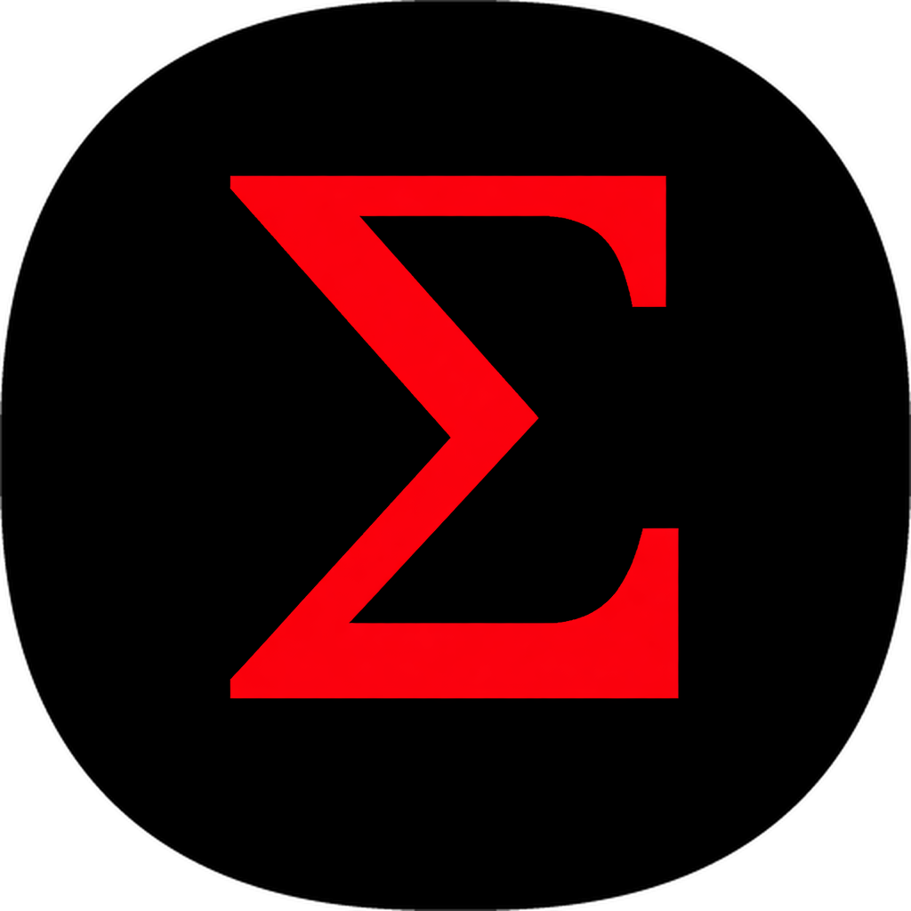

<!doctype html><html><head><meta charset="utf-8">
<title>SOST in 2 Minutes — V15</title>
<link rel="stylesheet" href="lib/brand.css">
<style>
  .scene{position:absolute;inset:0;display:flex;flex-direction:column;
    align-items:center;justify-content:center;text-align:center;padding:0 140px}
  .kicker{font-family:var(--mono);font-size:26px;letter-spacing:.34em;
    color:#5C6670;text-transform:uppercase;margin-bottom:48px}
  .head{font-family:var(--sans);font-weight:700;font-size:78px;color:var(--white);
    letter-spacing:-.015em;line-height:1.14;max-width:26ch}
  .head .r{color:var(--red)} .head .v{color:var(--violet)} .head .c{color:var(--cyan)}
  .sub{font-family:var(--mono);font-size:33px;color:var(--dim);line-height:1.55;
    margin-top:42px;max-width:60ch}
  .mark{width:250px;height:250px}
  .wordmark{font-size:86px;margin-top:62px}
  .tag{font-family:var(--mono);font-size:34px;color:var(--dim);margin-top:46px;letter-spacing:.04em}
  .rows{display:flex;flex-direction:column;gap:26px;margin-top:16px}
  .rw{font-family:var(--mono);font-size:40px;color:var(--white);letter-spacing:.02em}
  .rw span{color:#5C6670}
  .big{font-family:var(--sans);font-weight:700;font-size:132px;color:var(--white);
    letter-spacing:-.02em;font-variant-numeric:tabular-nums}
  .big .u{font-size:52px;color:var(--dim);font-weight:400;letter-spacing:.06em}
  .chips{display:flex;gap:34px;margin-top:74px}
  .ic{width:30px;height:30px;flex:none}
  .note{font-family:var(--mono);font-size:25px;color:#4E5860;margin-top:54px;letter-spacing:.03em}
</style></head><body>
<div class="stage"><div class="scene" id="sc"></div></div>
<script>
/* Every claim below was verified against the live site on 2026-09-02.
   Nothing marked VERIFY or STALE in docs/SOST_INTRO_V15_VIDEO_SPEC.md is used:
   PoPC is omitted (the site still mixes the superseded DEX framing) and the BTC
   leg is omitted (no current public statement of its gate state).            */
var LOGO='';

var SCENES=[
 {d:10, pulse:true, html:LOGO+'<div class="wordmark">SOST</div>'+
   '<div class="tag">Native Layer&nbsp;1 Proof-of-Work</div>'},

 {d:10, html:'<div class="kicker">How it started</div>'+
   '<div class="head">A <span class="r">fair launch</span>,<br>by construction.</div>'+
   '<div class="rows" style="margin-top:52px">'+
   '<div class="rw"><span>&mdash;</span> No ICO</div>'+
   '<div class="rw"><span>&mdash;</span> No premine</div>'+
   '<div class="rw"><span>&mdash;</span> No VC allocation</div>'+
   '<div class="rw"><span>&mdash;</span> No dev tax</div></div>'},

 {d:11, html:'<div class="kicker">The engine</div>'+
   '<div class="head"><span class="r">ConvergenceX</span></div>'+
   '<div class="sub">A memory-hard proof-of-work built for SOST.<br>'+
   'Open source, MIT licensed.</div>'},

 {d:12, html:'<div class="kicker">The supply</div>'+
   '<div class="big">4,669,201 <span class="u">SOST</span></div>'+
   '<div class="sub">A hard cap. ~9.03% annual decay,<br>'+
   '~95% emitted over thirty years.<br>Blocks target ten minutes.</div>'},

 {d:11, html:'<div class="kicker">What changes next</div>'+
   '<div class="head"><span class="c">V15</span> activates at<br>block <span class="c">25,000</span>.</div>'+
   '<div class="sub">A scheduled protocol upgrade, on a known height.</div>'},

 {d:12, html:'<div class="kicker">Mechanism 1</div>'+
   '<div class="head"><span class="v">DTD</span></div>'+
   '<div class="sub">Deterministic Token Distribution &mdash; how the block reward<br>'+
   'reaches miners on a fixed <span style="color:#C860FF">1-of-3</span> cadence,<br>'+
   'by rules, not by decree.</div>'},

 {d:11, html:'<div class="kicker">Mechanism 2</div>'+
   '<div class="head"><span class="r">Atomic Swap DEX</span></div>'+
   '<div class="sub">Trade SOST trustlessly.<br>No custodian holds your coins.</div>'},

 {d:10, html:'<div class="kicker">Who runs it</div>'+
   '<div class="head">Anyone with<br>a computer.</div>'+
   '<div class="sub">Run a node. Point a miner at it.<br>There is no permission to ask for.</div>'},

 {d:10, pulse:true, html:LOGO+
   '<div class="chips">'+
   '<span class="chip"><svg class="ic" viewBox="0 0 24 24" fill="none" stroke="currentColor" stroke-width="1.7"><circle cx="12" cy="12" r="9"/><path d="M3 12h18"/><path d="M12 3c2.6 2.6 2.6 15 0 18C9.4 18.4 9.4 5.6 12 3z"/></svg><span>sostcore.com</span></span>'+
   '<span class="chip"><svg class="ic" viewBox="0 0 24 24" fill="none" stroke="currentColor" stroke-width="1.7" stroke-linejoin="round"><path d="M21.5 3.5 2.8 10.6l6.4 2.3 2.3 6.4z"/><path d="M21.5 3.5 9.2 12.9"/></svg><span>t.me/SOSTProtocolOfficial</span></span>'+
   '</div><div class="note">Open source &middot; MIT &middot; sostcore.com</div>'}
];

var q=new URLSearchParams(location.search);
var i=parseInt(q.get('scene')||'0',10), t=parseFloat(q.get('t')||'0');
var s=SCENES[i];
document.getElementById('sc').innerHTML=s.html;
if(s.pulse){
  var k=0.5-0.5*Math.cos(2*Math.PI*t/2.4), e=0.62+0.38*k;
  document.getElementById('mk').style.filter=
    'drop-shadow(0 0 '+(12+8*k).toFixed(1)+'px rgba(255,16,36,'+(0.55*e).toFixed(3)+')) '+
    'drop-shadow(0 0 '+(34+18*k).toFixed(1)+'px rgba(255,16,36,'+(0.40*e).toFixed(3)+')) '+
    'drop-shadow(0 0 '+(78+34*k).toFixed(1)+'px rgba(255,16,36,'+(0.24*e).toFixed(3)+'))';
}
document.documentElement.setAttribute('data-ready','1');
</script></body></html>
